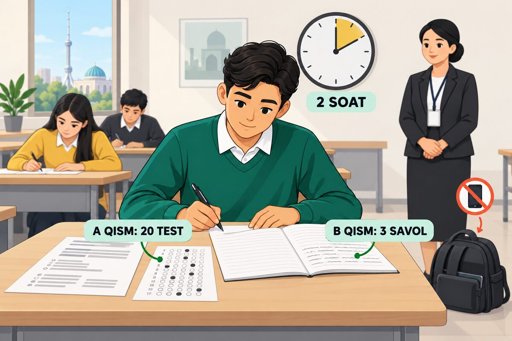
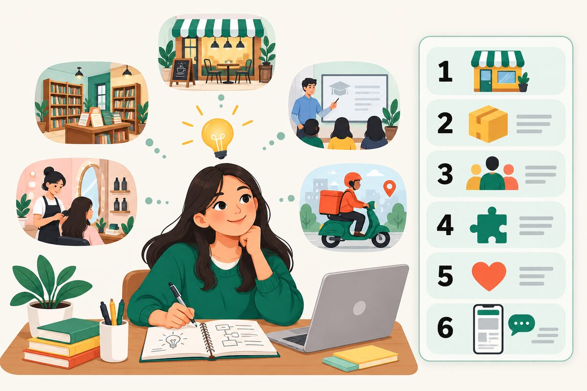
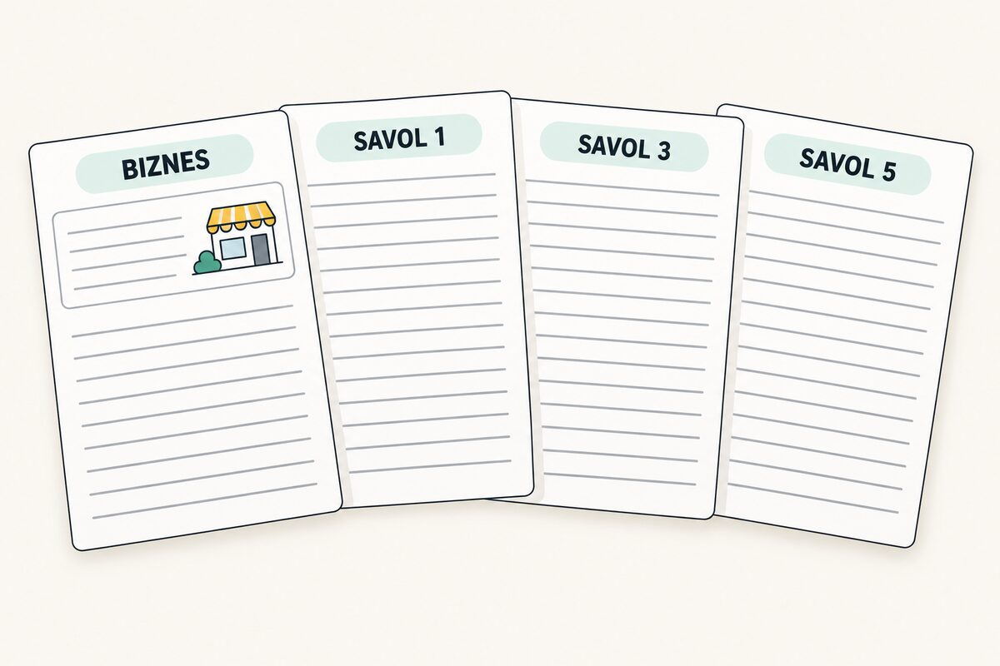
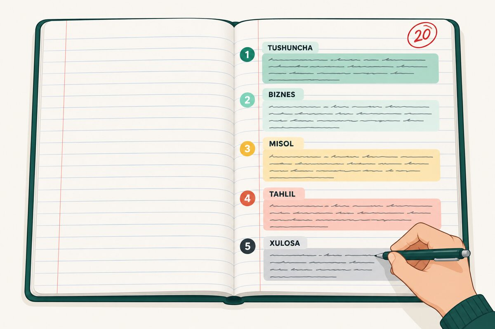

1. Imtihonda nima bo‘ladi

2-noyabr · 2 soattelefon va konspekt yo‘q
A qism · 4020 test
B qism · 60g‘oya + 5 savoldan 3 tasi
B qismda nima qilasiz:
- Javoblar daftariga avval biznes g‘oyangizni 2–3 gapda yozasiz.
- 5 savoldan 3 tasini tanlaysiz. Har bir javob — yangi sahifada, tepasida «Savol 1».
- Har bir javob — 5 qism:
1 TUSHUNCHA2 BIZNES3 MISOL4 TAHLIL5 XULOSA
Bugun reja oddiy: g‘oyangizni yozasiz → ChatGPT 5 savolga tayyor javob beradi → siz ularni daftarga ko‘chirasiz → oxirida bittasini telefonsiz eslab yozasiz.
O‘qituvchi uchun: dars rejasi (120 daqiqa)
| 0–10 | 1-qadam: imtihon va 5 qism formulasi |
| 10–20 | 2-qadam: har kim g‘oyasini yozadi |
| 20–90 | 3–4-qadam: 5 savol × ~14 daqiqa — javobni olish, o‘qish, daftarga ko‘chirish |
| 90–110 | Sinov: telefonlar yopiq, 1 ta javobni eslab yozish (20 daqiqa) |
| 110–120 | O‘z ko‘chirmasi bilan solishtirish, uyga vazifa |
2. Biznes g‘oyangiz

Tanish sohani tanlang (kafe, o‘quv markazi, onlayn do‘kon, go‘zallik saloni…). G‘oyada raqamli texnologiya bo‘lsin: sayt, bot, ilova, onlayn to‘lov. G‘oya topolmasangiz — pastdagi ChatGPT tugmasini bosing.
Tayyor bo‘lgach, shu 2–3 gapni daftaringizning 1-sahifasi tepasiga yozing. Imtihonda ham aynan shunday boshlaysiz.
3. 5 ta savolga tayyor javob
Har bir savolda «Javobni olish»ni bosing — ChatGPT sizning biznesingiz uchun 5 qismli javob beradi. Uni o‘qing, tushunmagan joyini so‘rang («buni soddaroq tushuntir»), keyin daftarga ko‘chiring va «Ko‘chirdim» belgisini qo‘ying.
Yozuv:
Ko‘chirildi: 0 / 5
4. Daftarga qanday yozish


Ko‘chirish qoidalari:
- 1-sahifa tepasi — biznes g‘oyangiz:2-qadamda g‘oyani yozing
- Har bir savol — yangi sahifa, tepasida katta qilib «Savol 1», «Savol 2»…
- 5 qismni alohida abzats qiling: Tushuncha · Biznes · Misol · Tahlil · Xulosa.
- Atamalarning tagiga chizing (masalan: axborot tizimi (information system)).
- Ko‘r-ko‘rona emas, tushunib yozing — keyin eslab yozishingiz kerak bo‘ladi.
Tekshirib oling: har bir javobda 5 qism bormi? Misolda raqam bormi? Tahlilda 2 afzallik va 2 cheklov bormi? Xulosada tavsiya bormi?
Sinov: telefonsiz eslab yozing
Ko‘chirgan javoblaringizdan birini yoping va yangi varaqqa eslab yozing. Keyin solishtiring: qaysi qism yo‘q?
20:00
Imtihongacha (2-noyabr): har kuni 1 ta javobni yopib, eslab yozing va daftaringiz bilan solishtiring. 5 kun = 5 savol. A qism uchun — Kahoot (PIN 03149006).
Eslatma: imtihonda telefon yo‘q. Daftaringizdagi javoblarni o‘qib, tushunib, o‘z so‘zlaringiz bilan eslab yozishni mashq qiling.